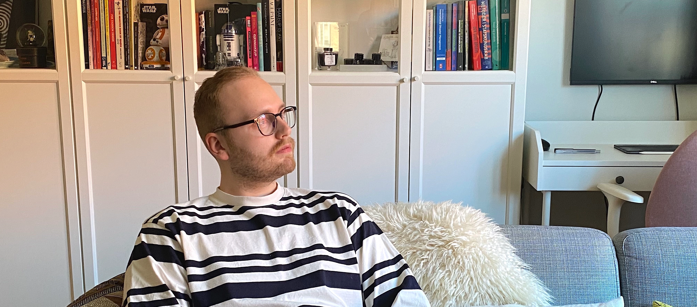
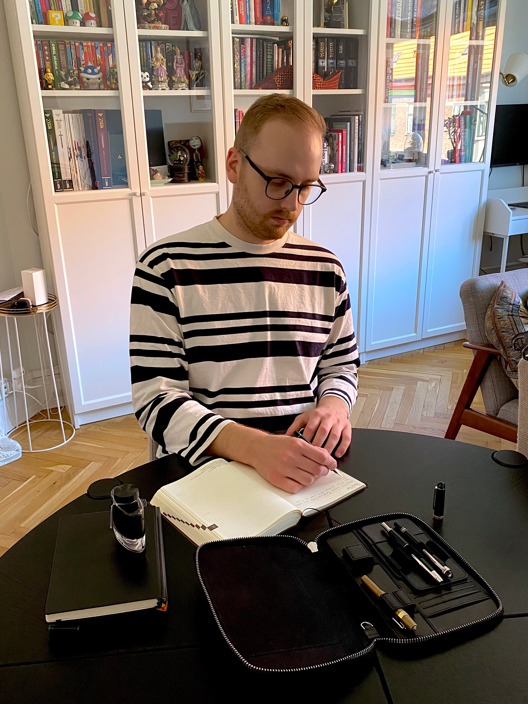

Mikkel Nyegaard - Fyldepenne


Lidt om videoen
I dette projekt har Andrea og jeg, interviewet Mikkel Nyegaard omkring hans favorit interesse. Han har en stor passion for fyldepinde og skriveredskaber. I videoen fortæller han i sine egen ord omkring hvordan hans passion udfolder sig for ham i hverdagen og hvad man skal forberede sig på hvis man også selv vil springe ud i at samle fyldepenne og skriveredskaber.